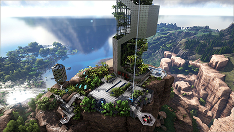

Das Spiel wird wahlweise aus einer Third-Person-Perspektive oder aus der Egoperspektive gespielt. Die
Fortbewegung erfolgt zu Fuß oder reitend bzw. fliegend oder schwimmend auf einem Tier. Ihr könnt
Nahkampfwaffen
sowie Pfeil und Bogen verwenden, um euch gegen aggressive
Kreaturen
zu verteidigen. Viele der Kreaturen können gezähmt werden, was euch Zugriff auf die Fähigkeiten des jeweiligen
Tieres gewährt. Zudem ist es euch, mit Hilfe von Gegenständen, welche aus der Umgebung eingesammelt werden
können, euer Arsenal an Waffen und auch anderen Gegenstände zu erweitern. Ihr könnt zudem über ein großes
Bausystem eigene Strukturen errichten und diese auch zur Verteidigung nutzen.
Um zu Überleben braucht man Vier Dinge:
Essen
Wasser
eine Basis
Resscourcen
und viel Geduld

Hier eine Anleitung wie man schnell gute Ausrüstung bekommt:
Steinaxt und Steinsptizhacke herstellen
Eine Basis in der nähe von Wasser bauen
So schnell wie möglich ein Triceratops zähmen
Viel Holz und Stroh farmen mit dem Triceratops
So schnell als möglich 20 Level aufsteigen
Ein Ankylosaurus zähmen
Extrem viel Eisen farmen
Metall ausrüstung herstellen
Ein T-Rex zähmen und eine passende Base bauen
Vor seinen Freunden angeben wie gut man in Ark ist